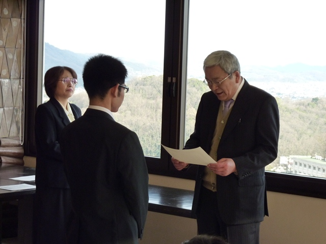
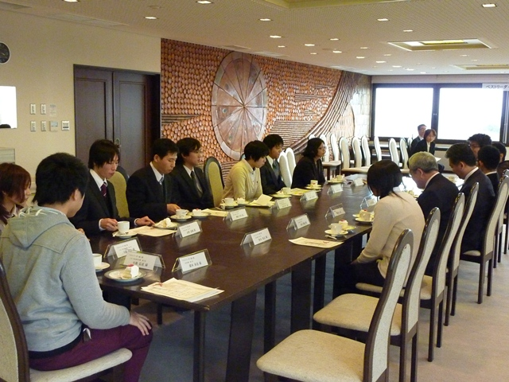

|
表彰式の様子
|
|

|
2012年度のベストリーダー賞表彰式を、平成25年1月15日（火）15:00〜、岡山理科大学11号館８階ラウンジにて開催しました。
当日は、欠席者3名を除く受賞者12名が参加し、橋爪道彦図書館長より、表彰状と副賞の図書カードが授与されました。
大賞では、理工系１位及び人文・社会化学の１位を生物地球システム学科の堤大地君がＷ受賞、文学の１位と理工系の２位を応用数学科の小野舞子さんが受賞しました。
新人賞は、理工系１位と人文・社会科学の２位をバイオ・応用化学科の松本祥一君がＷ受賞、人文・社会科学の１位を電気電子システム学科の小椋晶奈さんが、文学の１位を情報科学科の廣本拓哉君が受賞しました。
Ｗ受賞者が３名もおり、良く図書館を利用してくれて、うれしく感じました。
|
表彰式後、ベストリーダー賞受賞者と、図書館職員との懇談会を行い、受賞の感想や図書館への要望などが談義されました。
|

|
| 大賞受賞者の感想 |
|
理工系1位
人文・社会科学1位
堤 大地
|
Q 受賞しての感想
A 選ばれるとは思わなかったので、うれしさと驚きの感情があります。
また今後も、さらなる知識の飛躍を目指して、本を読み続けたいです。
Q 受賞の秘訣は？
A 興味の本を片っ端から読むことです。
|
|
理工系2位
文学1位
小野 舞子
|
Q 受賞してのご感想は？
A とても嬉しいです！高校生の時には全くといっていいほど、自分から進んで本を読んだことがなかったので、今の自分が本をこんなに借りて読んでいるなんて驚きました。
Q 受賞の秘訣は？
A 長期休暇は自分の時間がたくさんあるので、その時にたくさん本を借りて読みました！
|
| 大賞受賞者の推薦本 |
|---|
| 署名 / 著者 [請求記号] | 推薦の理由 |
|---|
記憶力世界チャンピオンカールステン博士の頭がよくなる勉強法 : 単語・歴史・公式・数学がすばやく覚えられる驚異のテクニック / グンター・カールステン [141.3/Ka] 21号館一般
|
・脳の向上につながる。
・記憶力が増進される。
|
世界で一番わかりやすい航空気象 : 今までに無かった天気のはなし / 西守騎世将 [538.82/Ni] 10号館2F大型本
|
気象のことがとてもわかりやすく書いてある。 |
達人プログラマー / アンドリュー・ハント [409.63/Ta] 11号館2F
|
質の良いプログラムを書けれるようになった。一年の時に読んだ時は何を書いてるのか理解できなかったが、四年の頃になると理解できるようになっていた。 |
数学入門.上 / 遠山啓 [410/To/1] 11号館2F
|
日常的な話を織り交ぜて書かれているので数学が苦手な人も数学を身近に感じられる本であると思う。 |
とんび / 重松清 [908/Ka/S] 10号館2F文庫本
|
親子（父と息子）の絆の物語。息子の人生を一番に考える父の熱い言動に心が打たれます！ |
ベン・トー / アサウラ [908/Sh/A] 10号館2F文庫本
|
単純に面白かった。 |
ラブ・ケミストリー / 喜多喜久 [913.6/Ki] 10号館2F 単行本
|
有機合成の研究室を舞台としたSFチックな恋愛小説なので、有機化学に携わる人は 'あるあるある！'っと共感できると思います。有機化学に詳しくない人は、有機化学研究室がどんなことをしている場所なのかちょっぴり覗けて楽しい本だと思います。 |
| 新人賞受賞者の感想 |
|
理工系1位
人文・社会科学2位
松本 祥一
|
Q 受賞してのご感想は？
A 結構本を借りたと思ったが、自分より多く借りている人がいて驚いた。
四年間にも入れるように頑張りたいです。
|
|
人文・社会科学1位
小椋 晶奈
|
Q 受賞してのご感想は？
A こんなに沢山の本を読んでいたとは、思いもしませんでした。驚きましたが、素直に嬉しさを感じています。
読書を通して、自身の人生の幅を広げることが出来ました。これからも、より多くのそして様々なジャンルの本を読みつつ大学生活を楽しんで過ごしたいと思います。
|
| 新人賞受賞者の推薦本 |
|---|
| 署名 / 著者 [請求記号] | 推薦の理由 |
|---|
| やさしいC / 高橋麻奈 [409.64C/Ta] 11号館3F |
自分の学科の2年生の教科書ですが、非常に丁寧に書かれていて、C言語初心者でも、すんなりと学習できるのでオススメ。 |
| 数学ガール / 結城浩 [410.4/Yu] 11号館3F |
とりあえず数学好き、クイズ好きには、オススメ。
こんな考え方もあるんだと思える1冊です。
|
| 池上彰の「ニュース、そこからですか!?」 / 池上彰 [304/Ik] 21号館3F |
タイトルを見て分かる通りで、そんなに簡単なところから？と思うところから少しずつ解説してくれているので、とても理解しやすい本です。また、池上さんたしく興味を持ちやすい所に着眼しているところも、お勧めの理由です。 |
| Osera / [520.4/Ni] 21号館3F雑誌 |
岡山で楽しく生活するのに役立つ情報がたくさん載っていて、県外から来た人だけでなく、岡山県民の人にもお勧めです。 |
血液型の科学 / 藤田紘一郎 [491.32/Fu] 11号館2F
|
血液型の歴史、血液型によるかかりやす病気が知れるため。
|
| 理科大学図書館の良さと利用した印象 |
・月に5冊まで本の注文が可能なこと。
・新しい本が多い。
・新しい創造の広がる場。
・山のさらに山の上にある図書館なので、借りたい本がいつでも借りれることが出来る。（利用者が少ないので）
・読みたい本を手に入れられる。
・和書が豊富にあるところ。また、専門書だけでなく初心者でも読むことが出来る本が多いこと。
・学びの場所です。講義で分からなかった時や、興味を持ってもっと知りたいと思った時には、必ず図書館に行っていました。
・様々な嗜好の本や、自分で手に入れづらい本があり、読みたい本があれば、すぐに入荷してもらえるところ。
・三つの図書館が別々の所にあり、空いた時間に活用しやすい。それぞれ雰囲気が違って過ごしやすい。
・新しい知識を見つける所。
・本の種類の多さと、本の数が多いこと。
・おもしろい本が読める場所。
・蔵書数も多く、静かなので学習するにも、読書するにも、落ち着いてできるところ。
・学園内で一番ゆったりできる場所。
・施設がきれいで、新しい本がたくさん入ってくるところです。
・落ち着いた雰囲気で、読書・勉強ができる場所です。
・多くのジャンルの本をそろえているところ。
・教養を深める場所。
|